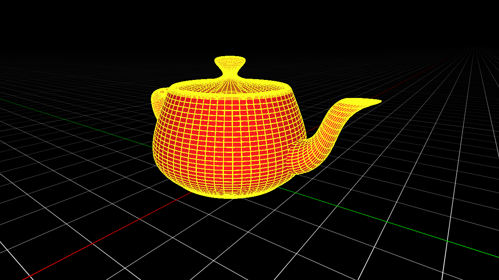
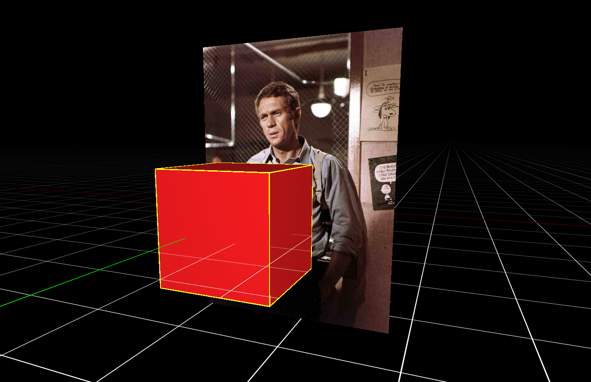
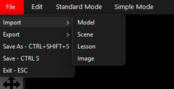

File I/O
Introduction
ABC3D allows for the import and export of various different industry standard file types, as well as its own proprietary scene files.
Import
ABC3D supports importing .obj and .stl model files.

ABC3D also supports importing a proprierty .abc3d scene file, as well as .html lesson files.
Lastly, ABC3D supports importing reference images. These can be .jpeg or .png.

All of this can be done from the file menu bar item.

Export
Models can be exported as .obj or .stl model files, or they can be exported as .abc3d scene files. This can be done from the file menu bar item pictued above.
Saving
Saving the scene will save as a .abc3d scene file. This can be done under the file menu item or by pressing CTRL+S, or CTRL+SHIFT+S to save as a new file.